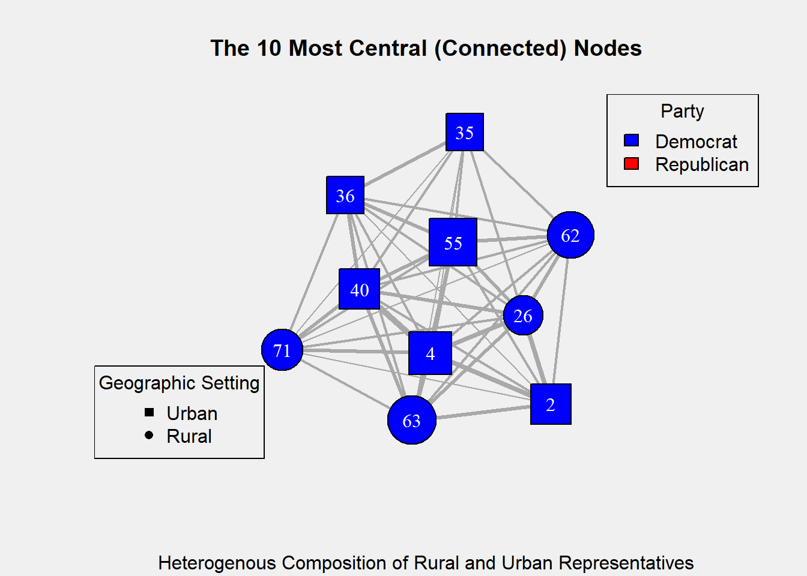

Tom Hesse DACSS604 Final Project
Polarization, Division: The New American Norm?
[Topic Sentence Here]. To even casual observers, polarization and division seem to characterize American politics. Bitter political cleavages have been formed along the lines of several factors: political ideologies (Source), age groups (Source), racial/ethnic identities (Source), and more. One divide stands out as particularly stark: geography. Rural and Urban politics are particularly polarized. Americans living in different types of geographic settings have opposing ideas on political issues (Source). Give examples polarization.
Paragraph about geographic polarization/division in general. Cite studies of issue in Italy, France.
Political division has wide-reaching negative effects on both individuals and groups (Sources). Give examples of such negative effects. Predictions have been made that such polarization may deepen in coming years (source). This division and polarization is established and worrisome, but much of the research examines politics at the national level: what about politics at the state level? This project contributes to the investigation of this question.
This Project
This project examines the role of geographic division in Massachusetts state politics. Far less research has been dedicated to this topic than politics at the national level. However, state governments have significant power in the US. Therefore, it bears worth to examine how the important phenomenon of political division may be affecting governance at the state level. Each state has its own politics and issues, therefore it would be a monumental task to examine all states in one project. To approach the matter with appropriate depth, this project examines politics in one state only, The Bay State: The Commonwealth of Massachusetts.
Massachusetts’ state government has a similar structure to the US federal government: An executive branch, responsible for the enforcement of laws, headed by a single executive (the governor) with numerous agencies; A bicameral legislative branch (having two distinct chambers) charged with the creation of new laws; and a judicial branch, composed of a system of courts that interpret the laws. This project investigates the question of geographic division in Massachusetts politics by examining the legislative branch specifically.
In Massachusetts, constituents of a district elect representatives to act on their behalves—and ideally, in their best political interests—within the legislature by voting for bills that align with their political beliefs. Therefore, if a stark gap exists between the political beliefs of rural and urban residents of Massachusetts, it is logical to believe that such a gap would be observable in the political behavior of legislators that represent different types of geographic settings (rural vs urban). Throughout this project, legislators that represent rural districts will be referred to as rural legislators, rural representatives, and/or rural senators. Legislators that represent urban districts will be referred to as urban legislators, urban representatives, and/or urban senators. Political districts were determined as rural or urban using a modified classification method from the U.S. Census Bureau: districts with population densities of 1,000 people per square mile or more were classified as urban. Districts with population densities of less than 1,000 people per square mile were classified as rural.
This project uses a mixed methods approach (utilizing both quantitative and qualitative methods) to study political cooperation in the Massachusetts legislature. The quantitative portion examines the Massachusetts House of Representatives, Massachusetts’ equivalent to the US’ House of Representatives. The qualitative portion studies the other chamber of Massachusetts’ legislature, the Massachusetts Senate (also similar to its Federal counterpart), as well the House of Representatives..
Quantitative: Network Analysis of Massachusetts House of Representatives, 2021–2022
The quantitative portion of the project examines political cooperation in the Massachusetts House of Representatives during the 192nd General Court (the name of Massachusetts’ legislature). This legislative body was in session throughout 2021 and 2022. The primary method of investigation was a network analysis of this body. Brief Primer on network theory/analysis.
In this project, nodes represent individual representatives (legislators) in the 192nd General Court, and edges represent the cosponsoring of a bill. For example, if Representative A and Representative B both sponsor bill X, then there would be an edge between those two representatives. In this project, edges are weighted. If edges are weighted, it means that they have a value associated with them, representing some measurement. In this project, edge weight represents how many bills two nodes cosponsored. For instance, in the previous scenario, Representative A and Representative B cosponsored one bill, therefore the weight of the edge connecting them would be equal to one. In another hypothetical example, Representative B and Representative C cosponsored three of the same bills, therefore the weight of the edge between them would be equal to three. The data consists of 87 nodes (individual representatives) and 50 bills that formed edges (connections) between those representatives. All bills were introduced during the 192nd General Court.
The Center of the Network
This analysis yielded multiple insights into the nature of political cooperation in the Massachusetts legislature. The graph below (Figure 1) shows the 10 nodes with the highest degree. In this case, a node’s degree is equal to the sum of the weights of all its different edges. For example, if Node A has 3 edges connecting it to different nodes, with all edges having weights of 2, then Node A has a degree of 6 (2*3=6). Examining the nodes with the highest degrees is useful because it shows us which nodes are the most connected to other nodes in the network, i.e., which representatives are the most collaborative in this sample. In Figure 1, Edges’ weights are denoted by their thickness: the thicker a connection (line) between two nodes, the more bills those two nodes cosponsored together.
With the shape of the nodes representing geographic-setting-type (circle = rural representative, square = urban representative), we can see that the most collaborative representatives consist of a heterogeneous mix of urban-representing and rural-representing legislators. 6 of these nodes represent urban representatives, 4 represent rural representatives, and each of these nodes are heavily connected to one another. This paints a picture of rural and urban legislators collaborating by sponsoring the same bills, denoting a lack of division and polarization among these important and productive legislators.
Figure 1:
Blockmodeling the Network
We can learn more from this network. Another aspect of network theory, blockmodeling, can provide more insights about the nature of rural-urban political collaboration in the Massachusetts legislature. Blockmodeling is a method used to simplify and study complex networks. It works by grouping nodes that have similar patterns of edges together, forming “blocks.” Therefore, nodes that are grouped together have similar roles within the networks. By analyzing which blocks different representatives are grouped into, we can learn about patterns of collaboration within this network.
The table below (Figure 2) shows a table that summarizes important information yielded by the blockmodeling analysis done for this project. In this case, the network was divided into 10 blocks. Each row in the table represents a distinct block. The different columns show how many rural, urban, Democrat, and Republican legislators are in each block. It also shows the ratios of rural:urban representatives and Democrat:Republican representatives in each group.
Figure 2:
| Group | Rural | Urban | Democrat | Republican | Rural:Urban_Ratio | Democrat:Republican_Ratio |
|---|---|---|---|---|---|---|
| 1 | 5 | 5 | 4 | 6 | 1.00 | 0.67 |
| 2 | 0 | 12 | 12 | 0 | 0.00 | Inf |
| 3 | 5 | 2 | 0 | 7 | 2.50 | 0.00 |
| 4 | 11 | 12 | 21 | 1 | 0.92 | 21.00 |
| 5 | 1 | 3 | 3 | 1 | 0.33 | 3.00 |
| 6 | 1 | 6 | 7 | 0 | 0.17 | Inf |
| 7 | 1 | 16 | 17 | 0 | 0.06 | Inf |
| 8 | 2 | 1 | 3 | 0 | 2.00 | Inf |
| 9 | 1 | 0 | 1 | 0 | Inf | Inf |
| 10 | 1 | 2 | 3 | 0 | 0.50 | Inf |
We can see that some groups show a diverse collection of rural and urban representatives (e.g. groups 1, 3, and 4), while others skew more heavily rural or urban (e.g. groups 2, 6, and 7). This shows that in some sections of the legislature, there is high collaboration between rural and urban representatives. In other factions, collaboration is more common between legislators that represent the same type of district. This adds nuance to our understanding of the network. We can see that there is certainly a significant level of collaboration between rural and urban representatives—confirming what Figure 1 shows us—but there are also portions of the legislature where such collaboration is less common.
What does this tell us? It tells us that there was a moderate amount of rural-urban collaboration throughout the House of Representatives in The Massachusetts 192nd General Court. However, such collaboration was concentrated in certain groups of legislators, while other groups displayed less inter-group collaboration. To make an analogy, picture a high-school cafeteria: some portion of the students are upperclassmen, the rest are lowerclassmen. A significant number of the tables in the cafeteria have both upperclassmen and lowerclassmen sitting at them, showing considerable mingling between the two groups. At the same time, there is also a significant number of tables that have mostly (or all) upperclassmen or lowerclassmen. In this cafeteria, inter-group mingling is common, but groups keeping to themselves is also common. These results yield broad, invaluable results about patterns of collaboration within our sample. However, they do not convey the humanity behind the numbers. For greater depth of understanding, we turn to qualitative methods.
Qualitative: Interview and Observation of Massachusetts Senate, 2023–2024
The qualitative portion of this project examines political cooperation in Massachusetts’ Senate during the 193rd General Court, which was in session throughout 2023 and 2024. The primary methods included in this portion of the project were an interview with a political insider—a senior member of a Massachusetts State Senator’s staff—and ethnographic observation of legislative sessions. This portion of the project focused on adding depth of understanding to the patterns observed in the quantitative portion. The interview and observation sessions gave deeper insight into what political cooperation in Massachusetts state politics looks like.
Unlike the quantitative portion of the project, this portion did not focus on finding broad patterns, rather it was designed to evoke depth and nuance that complement the patterns found in the quantitative portion. These qualitative methods provided rich details about attitudes and experiences of legislators and political insiders in the Massachusetts General Court. The semi-structured interview with a political insider yielded candid information that would be nearly impossible to find within quantitative data, and the ethnographic observation revealed what the nature of political collaboration in Massachusetts’ legislature looks like in action. Both methods are detailed below.
The Interview
In August 2024, I interviewed a senior staff member (“The Staffer”) of a then-sitting Massachusetts State Senator (“The Senator”). The Staffer was then responsible for assisting The Senator with much of their legislative work. The Staffer had candid exposure to most of The Senator’s dealings, and therefore had privileged access to political operations within the Massachusetts State Senate. Both The Staffer’s and The Senator’s identities are kept secret for the purposes of confidentiality.
The interview was semi-structured, meaning that there was a loose written script with specific questions and general ideas to explore, but I was free to go off-script and improvise questions and dialogue as I saw fit, which I frequently did. I asked The Staffer what they thought about political collaboration in the Massachusetts Senate: do senators more frequently collaborate, or is division more common? Are their certain issues that are more likely evoke collaboration or division? How much does any present division slow down the process of legislation? How well do rural and urban legislators collaborate with each other?
The Staffer described the Senate as being a generally collaborative place, including between rural-representing and urban-representing senators, though with some caveats. The Staffer explained that neither rural vs urban nor democrat vs republican were the primary causes of division in the legislature. In fact, in the Staffer’s experience, rural and urban senators much more frequently worked together than they did against one another. The Staffer described most legislators as having an earnest willingness to collaborate with different groups of their colleagues, including across the rural-urban distinction. In The Staffer’s experience, productive, respectful and frequent communication between rural and urban senators was the norm.
In The Staffer’s perspective, the primary source of division in the Massachusetts legislature was between the two chambers: The House of Representatives and the Senate. According to the staffer, proceedings within each chamber were relatively harmonious in most ways, but the two chambers frequently disagreed and failed to collaborate with one another. The Staffer explained that this division was a significant impediment to progress, much more so than any division based on geography.
These results both confirm and add nuance to the results of the quantitative portion. Once again, collaboration is shown to be common between rural and urban legislators in MA, yet division still exists in some pockets of The General Court. Furthermore, this interview provides a real-time example of the harms of political division. The division between Massachusetts’ House of Representatives and Senate slows the pace of legislation, meaning important issues will go unaddressed for greater amounts of time, possibly with significant consequences for the people of Massachusetts.
Observation of Legislative Sessions
The second component of the qualitative portion of this project was consisted of ethnographic observation of several formal sessions of legislation in the Massachusetts House of Representatives during the 193rd General Court (2023–2024). Ethnographic observation is the process of observing the behavior of research subjects (in this case, Massachusetts legislators) in their natural habitats (The Massachusetts House of Representatives). I observed representatives as they formally deliberated on bills by giving speeches that declared their reasons for supporting or opposing the relevant bill. During these speeches, representatives frequently referenced other representatives that had deliberated on the bill, referencing both their arguments, and more personal details. These sessions of observation provided rich detail into how elements of this political network actually interact, and the subjective nature of these interactions. These observations added color and detail to the broad patterns observed in the quantitative portion of the project.
The analysis of these observation sessions consisted of analyzing specific language, sentiments, and themes common to the representatives’ speeches. How did representatives speak to one another? Did they usually use more positive and supportive language, or negative and oppositional? Was there a difference in how representatives spoke to/about representatives from different setting types (rural vs urban) vs representatives from the same setting type? These were the kinds of questions which this component of the project was designed to answer.
Overall, when representatives took the initiative to give formal speeches in support or opposition of a bill, the sentiments and language used were highly positive and collaborative, including when representatives were addressing/referencing a representative of the opposite setting type. Sentiments of cooperation were far more common than sentiments of opposition, and rural representatives frequently used language to support urban representatives, and vice versa. The bitter hostility that seems to embody contemporary Federal Politics in the US was noticeably absent.
Analysis of these observational sessions was done by breaking down the speeches into themes—sentiments, phrases, specific words, concepts, etc. that were common among the different speeches. Figure 3 shows the percentage of all thematic observation that each theme constituted. Thematically, support was the norm, even in inter-geographic-setting-type dynamics. General observations also supported the notion that representatives were more apt to collaborate with one another across all group distinctions (including geography) than they were to oppose one another. A suitable analogy would be a loving family gathering on thanksgiving: many different personalities from different walks of life converge, but the dynamic is generally positive and supportive, and though there may be some turbulence or conflict between certain members of the family, these conflicts are usually handled with respect and decorum.
Figure 3:

Discussion
At the national level, American politics is rife with bitter hostility, polarization, and division. Negative relations occur across several cleavages, with the rural-urban divide being a particularly potent one. This noncooperative spirit can have significant negative implications, as it can worsen legislative dysfunction and therefore lead to a failure to take action on important issues. For this reason, this is an important phenomenon to study and understand, so that it might be alleviated.
There has been a lack of understanding as to whether this phenomenon extends to state governments. This project is an attempt to at least partially fill this gap. Massachusetts is as good a starting point as any other state, and the mixed-methods approach of this project allowed for both breadth and depth in understanding rural-urban division in The Bay State’s politics. The quantitative network analysis showed that there is at least a moderate amount of rural-urban collaboration within Massachusetts state politics. In the 192nd General Court, within the House of Representatives, there were groups of legislators where rural-urban collaboration was frequent and plentiful. The most collaborative portions of the sample contained a near-equal mix of rural and urban legislators. This finding came with a caveat, however, as blockmodeling showed that there were also factions that exhibited less inter-group collaboration. Therefore, though some corners of the legislature lack rural-urban collaboration, it is present and productive in others, which is a promising sign.
Once the network analysis showed that significant rural-urban collaboration is present in Massachusetts’ legislature, the qualitative interview and ethnographic observations illuminated more nuanced details about this topic. The interviewed legislative staffer described a legislature where senators were eager to work with one another, including senators that represented different types of geographic settings. Rural senators working with urban senators, and vice versa, was the norm. Geography was not a significant source of division—rather, discord between the two chambers of The General Court was the main source of division in the legislature. Ethnographic observation further revealed a generally collaborative House of Representatives, including relations between urban and rural legislators. Legislators frequently made speeches in support of bills sponsored by legislators of the opposite geographic setting type, and used language that evoked messages of collaboration and positivity, rather than division and hostility.
These results, when considered in tandem, paint a picture of a legislature where there is not a significant rural-urban divide. There is certainly evidence of some level of division, however it does not seem to be the result of geography. The Massachusetts General Court, at least in recent years, appears to host positive and collaborative relations between urban and rural legislators.
Conclusion
This project does not find support for a rural-urban divide in Massachusetts state politics. There are limitations to these findings. Firstly, this project only examines Massachusetts legislative politics in very recent years. It is not known whether these insights can be extrapolated to less recent sessions of The General Court. Furthermore, there are numerous ways to measure political collaboration and division, and this project utilizes only a small number of the possible methods. Other methods may yield different results; this, too, is unknowable based on this study alone. Future research could use different methods, such as more direct investigation of political attitudes among rural Massachusetts residents vs urban residents.
These limitations do not necessarily detract from this project’s findings, however. This project measures a small number of phenomena, but it finds promising results. The legislature is a central component of American government, both at the federal and state levels. Given that the rural-urban divide has proven to be a significant issue in recent years at the federal level, the evidence of its absence in Massachusetts’ legislature, as provided here, is a hopeful indicator that political collaboration between rural and urban districts—and by extension, the residents of those districts—is alive and well in The Bay State.